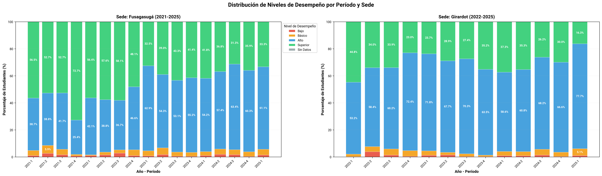
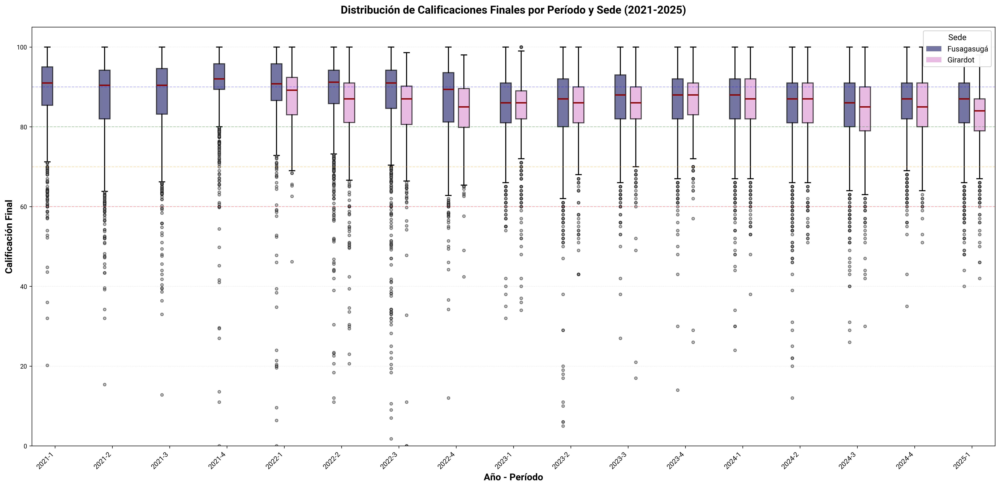
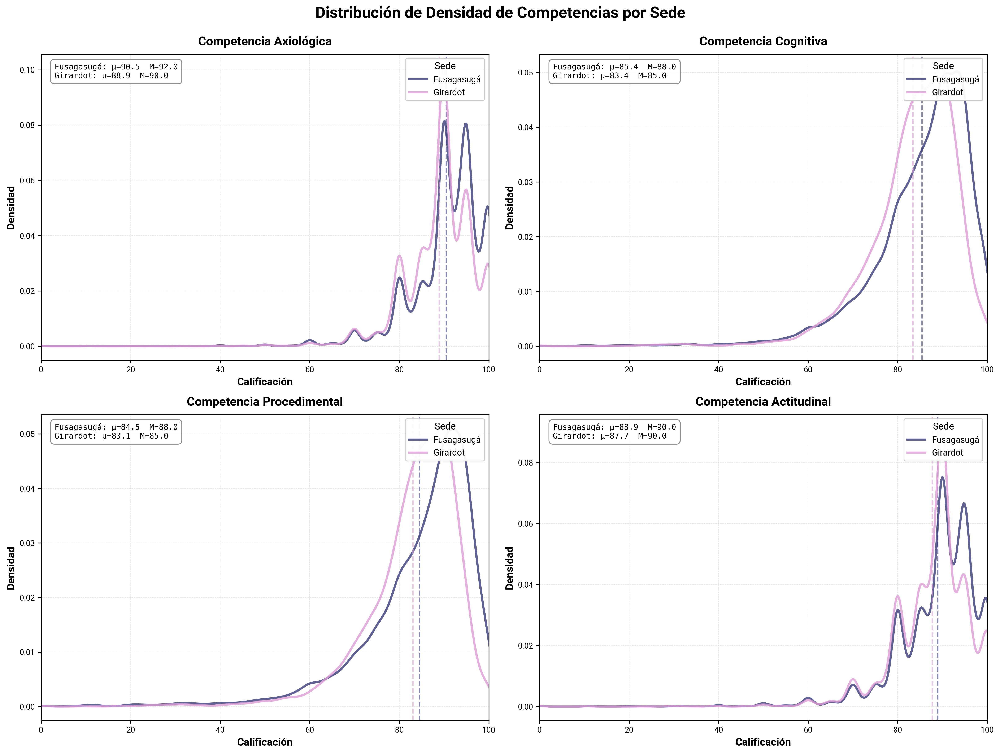
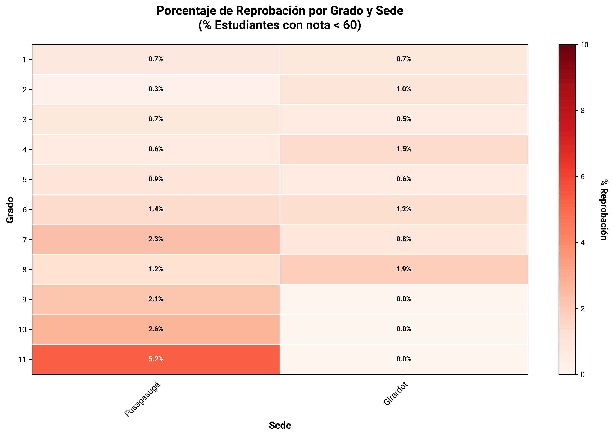
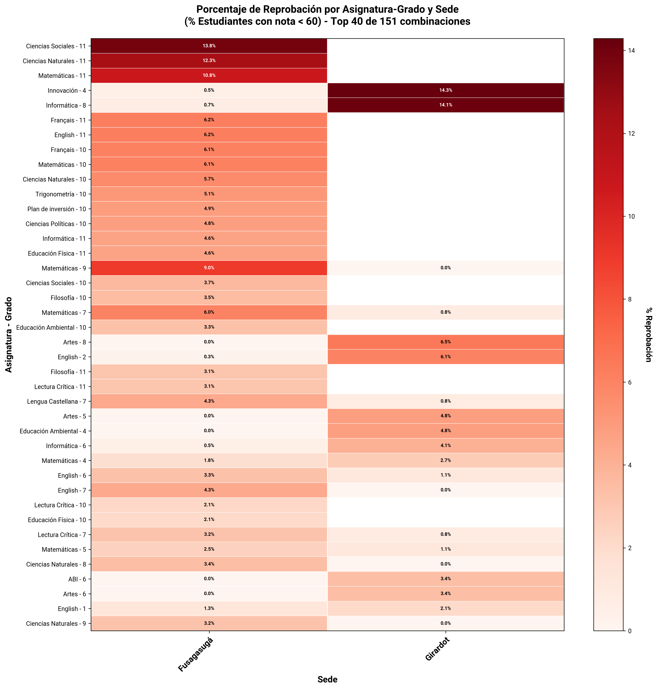
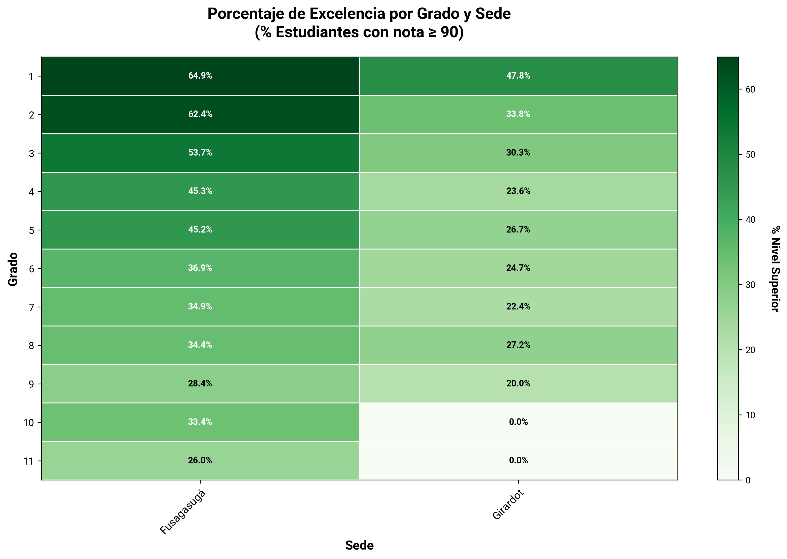
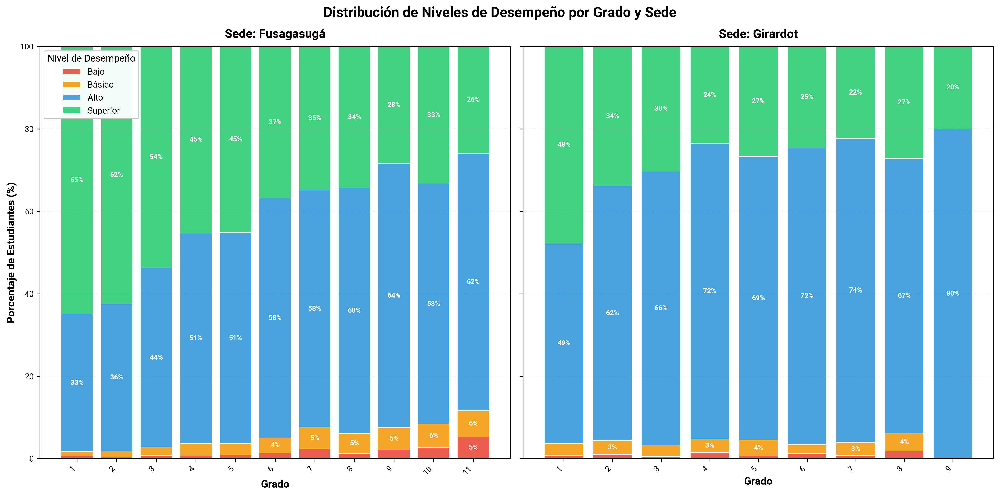
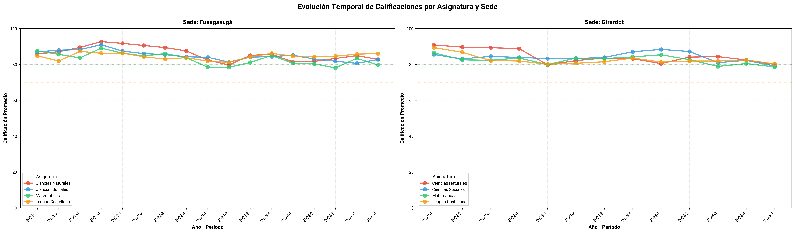
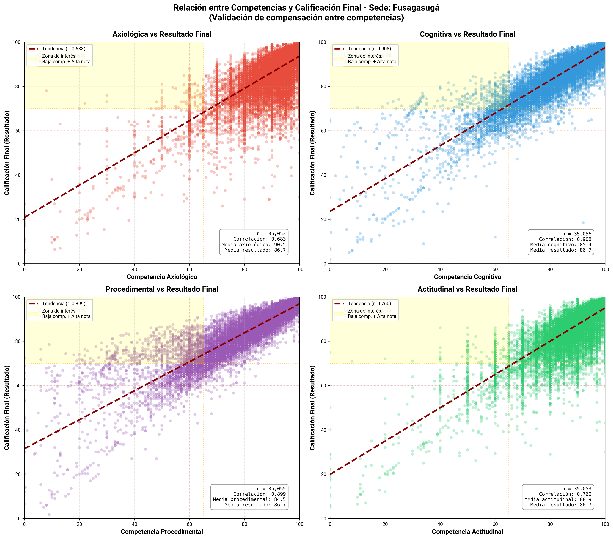
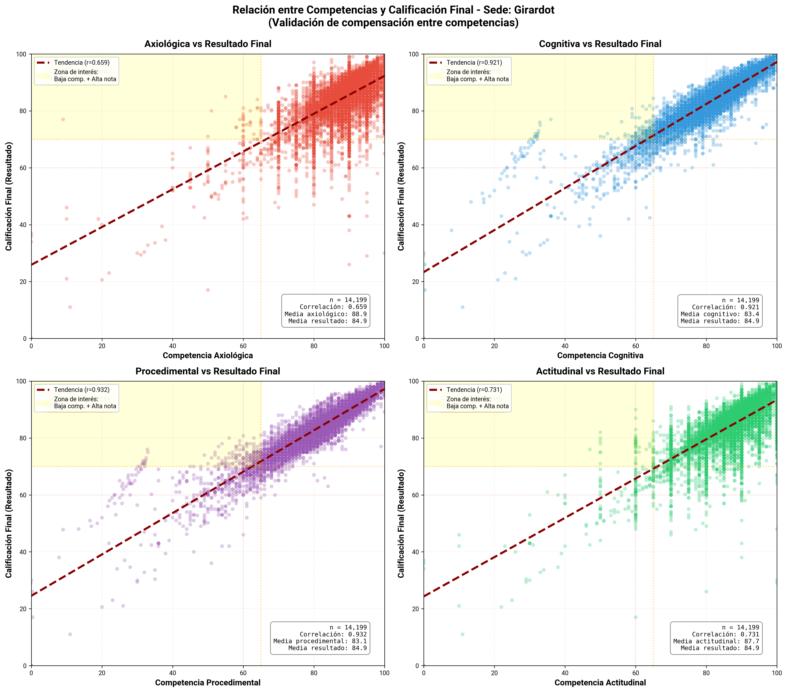

Análisis de Calificaciones Históricas 2021-2025#
Resumen#
Este análisis explora las calificaciones históricas de estudiantes.
Período analizado: 2021-1 a 2025-1
Sedes: Fusagasugá, Girardot
Grados: 1 - 11
1. Distribución de Niveles de Desempeño por Período y Sede#

Gráfico de barras apiladas que muestra la evolución temporal de los niveles de desempeño académico por período y sede.
Interpretación#
Escala de niveles:
🔴 Bajo (<60): Estudiantes reprobados
🟠 Básico (60-69): Desempeño apenas aprobatorio
🔵 Alto (70-89): Buen desempeño académico
🟢 Superior (≥90): Excelencia académica
Formato: Los porcentajes muestran la distribución relativa de estudiantes en cada nivel por período académico.
Análisis temporal: Permite identificar tendencias de mejora o deterioro en el desempeño a lo largo del tiempo.
Conclusiones#
Ambas sedes tienden hacia una estructura más homogénea con predominio del nivel alto, lo que sugiere consistencia en la evaluación institucional.
La baja proporción de niveles bajo y básico refleja control sobre la reprobación.
En Girardot se observa menor proporción de estudiantes en nivel superior, lo que puede indicar diferencias pedagógicas.
2. Distribución de Calificaciones por Período y Sede#

Boxplots que muestran la distribución de las calificaciones finales por período académico y sede.
Interpretación#
Componentes del boxplot:
Línea central (mediana): Calificación donde el 50% está por encima y 50% por debajo
Caja: Rango intercuartílico (Q1 a Q3) - donde se concentra el 50% central de los datos
Bigotes: Extensión hasta valores mínimos y máximos (dentro de 1.5×IQR)
Puntos: Valores atípicos (outliers)
Líneas de referencia:
🔴 60: Umbral de aprobación (Bajo)
🟠 70: Inicio de desempeño Básico
🟢 80: Inicio de desempeño Alto
🔵 90: Inicio de desempeño Superior
Mediana alta (>80): Indica un buen desempeño general del grupo
Caja amplia: Alta variabilidad en el rendimiento estudiantil
Mediana cerca de 60: Señal de alerta - grupo en riesgo
Conclusiones#
Fusagasugá mantiene medianas altas y estables, pero presenta una mayor cantidad de valores atípicos, especialmente hacia la zona baja (< 60). Esto sugiere más casos individuales de bajo desempeño, aunque sin afectar la tendencia general del grupo.
Girardot tiene medianas levemente inferiores pero con menor cantidad de valores extremos, indicando una distribución más compacta y homogénea.
Mientras Fusagasugá evidencia un rendimiento globalmente alto con mayor dispersión individual, Girardot refleja un comportamiento más uniforme, aunque con medianas ligeramente menores.
3. Densidad de Competencias por Sede#

Gráficos de densidad que muestran la distribución de calificaciones en las cuatro competencias evaluadas: Axiológica, Cognitiva, Procedimental y Actitudinal, comparando entre sedes.
Interpretación#
Curva de densidad: Muestra dónde se concentran las calificaciones
Pico alto y estrecho: Calificaciones muy homogéneas
Curva ancha y plana: Alta dispersión de resultados
Líneas verticales discontinuas: Indican la media (μ) por sede
Estadísticas incluidas:
μ (media): Promedio de la competencia
M (mediana): Valor central de la distribución
Conclusiones#
En Fusagasugá las curvas presentan concentraciones altas en los rangos superiores (80–100) con picos más marcados, lo que indica una mayor frecuencia de calificaciones elevadas y menor dispersión.
En Girardot se pueden observar patrones similares, aunque con curvas ligeramente desplazadas hacia la izquierda en las competencias Procedimental y Cognitiva.
Las competencias Axiológica y Actitudinal tienden a tener mayores concentraciones en valores altos y múltiples picos, mientras que la Cognitiva y Procedimental son más amplias, con mayor variabilidad en ambas sedes.
4. Proporción de Reprobación por Grado y Sede#

Mapa de calor que muestra el porcentaje de estudiantes con calificación final menor a 60 (reprobados) por grado académico y sede.
Interpretación#
Porcentaje mostrado: Indica qué proporción del grado está en riesgo académico
Patrones a identificar:
Puntos calientes: Celdas específicas con porcentajes muy altos
Conclusiones#
Fusagasugá presenta una tendencia ascendente de reprobación a medida que aumenta el grado.
Girardot mantiene valores bajos y estables en todos los grados, sin superar el 2%, y con ausencia de reprobación en varios niveles superiores.
La diferencia entre sedes es marcada: Fusagasugá muestra mayor variabilidad y un incremento progresivo en los grados altos, mientras Girardot conserva una distribución homogénea y controlada en todo el rango escolar.
5. Proporción de Reprobación por Asignatura-Grado y Sede#

Mapa de calor que muestra las Top 40 combinaciones de asignatura-grado con mayor proporción de reprobación.
Interpretación#
Eje vertical: Combinaciones de asignatura y grado
Eje horizontal: Sedes
Valores: Porcentaje de estudiantes reprobados en esa combinación
Conclusiones#
En Fusagasugá las mayores proporciones se concentran en los grados superiores, especialmente en Ciencias Sociales 11°, Ciencias Naturales 11° y Matemáticas 11°. También aparecen niveles intermedios en asignaturas técnicas y de idiomas.
Girardot muestra picos aislados de reprobación en Innovación 4 e Informática 8°, mientras el resto de las asignaturas mantienen porcentajes bajos o nulos.
En Fusagasugá la reprobación es más amplia y constante en distintas áreas del currículo, mientras que en Girardot se concentra en unos pocos casos específicos, reflejando un patrón más localizado.
6. Proporciones de Excelencia por Grado y Sede#

Mapa de calor que muestra el porcentaje de estudiantes con calificación final ≥90 (nivel Superior) por grado académico y sede.
Interpretación#
Porcentaje mostrado: Indica qué proporción del grado alcanza desempeño Superior
Conclusiones#
Fusagasugá registra altos niveles de excelencia en primaria, con una disminución gradual hacia los niveles superiores, alcanzando su punto más bajo en 11°.
Girardot mantiene porcentajes menores y más estables en la mayoría de los grados.
7. Distribución de Niveles por Grado y Sede#

Gráfico de barras apiladas que muestra la distribución porcentual de niveles de desempeño por grado académico en cada sede.
Interpretación#
Formato: Cada barra representa un grado, dividida en segmentos coloreados según nivel de desempeño
Escala de niveles:
🔴 Bajo (<60): Reprobados
🟠 Básico (60-69): Aprobados con desempeño básico
🔵 Alto (70-89): Buen desempeño
🟢 Superior (≥90): Excelencia
Señales de alerta:
Segmento rojo extenso (>15%)
Barra dominada por naranja (mucho «básico»)
Poco verde y azul combinados
Conclusiones#
En Fusagasugá primaria muestra una alta proporción de nivel superior, que disminuye progresivamente conforme avanza la escolaridad. El nivel alto se fortalece en los grados medios y superiores, mientras los niveles bajo y básico permanecen con tendencia ascendente.
En Girardot se presenta mayor proporción del nivel alto en casi todos los grados. El nivel superior es menor y más estable, mientras que los niveles bajo y básico se mantienen en valores reducidos.
8. Evolución Temporal de Asignaturas por Sede#

Gráficos de líneas que muestran la evolución del promedio de calificaciones en las 4 asignaturas principales a lo largo de los períodos académicos, por sede.
Interpretación#
Ejes:
Horizontal: Períodos académicos (año-semestre)
Vertical: Calificación promedio (0-100)
Líneas de referencia:
🔴 60: Umbral de aprobación
🟠 70: Inicio de desempeño Básico
🟢 80: Inicio de desempeño Alto
Análisis comparativo:
Líneas muy separadas: Asignaturas con desempeño muy diferente
Líneas paralelas: Tendencias comunes afectan todas las asignaturas
Líneas que se cruzan: Cambios relativos en la dificultad percibida
Conclusiones#
En Fusagasugá las calificaciones se mantienen estables en rangos altos (80–90), con leves fluctuaciones entre períodos. Ciencias Naturales y Lengua Castellana conservan los valores más consistentes, mientras Matemáticas muestra ligeras caídas en algunos bimestres.
Girardot tiene un patrón más plano con menos variación entre asignaturas, aunque con valores ligeramente menores que los de Fusagasugá. Ciencias Sociales presenta mayor estabilidad en el tiempo.
Ambas sedes mantienen trayectorias similares con rendimientos estables y sin caídas pronunciadas.
9. Relación entre Competencias y Calificación Final#
Visualizaciones#
Sede: Fusagasugá#

Sede: Girardot#

Diagramas de dispersión que muestran la relación entre cada competencia individual (Axiológica, Cognitiva, Procedimental, Actitudinal) y la calificación final del estudiante.
Interpretación#
Ejes:
Horizontal: Calificación en la competencia específica (0-100)
Vertical: Calificación final (0-100)
Elementos del gráfico:
Puntos: Cada punto representa un estudiante
Línea roja discontinua: Tendencia lineal (regresión)
Área amarilla: «Zona de interés» - Baja competencia + Alta nota final
Estadísticas incluidas:
r (correlación): De -1 a 1, mide la fuerza de la relación
n: Número de casos analizados
Casos en zona de interés: Estudiantes con patrón anómalo
Interpretación de correlación (r):
r > 0.7: Correlación fuerte positiva (esperado)
r = 0.4-0.7: Correlación moderada
r < 0.4: Correlación débil (señal de alerta)
Zona de interés (amarilla):
Alto porcentaje: Posible compensación entre competencias
Interpretación: Estudiantes con baja competencia específica pero nota final alta
Hipótesis: El sistema de calificación podría permitir compensar debilidades en una competencia con fortalezas en otras
Conclusiones#
En Fusagasugá las correlaciones son altas en todas las competencias, especialmente en la Cognitiva y Procedimental, donde los puntos siguen estrechamente la línea de tendencia. Esto indica una correspondencia consistente entre desempeño por competencia y resultado global.
Girardot presenta un patrón muy similar, con correlaciones igualmente fuertes. Las relaciones más ajustadas se observan en la Cognitiva y Procedimental, mientras que la Axiológica y Actitudinal muestran mayor dispersión.
En Fusagasugá en las competencias Cognitiva y Procedimental, hay una acumulación visible de puntos en la zona amarilla, que corresponde a estudiantes con bajas calificaciones en la competencia pero notas finales altas.
Aunque la relación general entre competencia y resultado es muy fuerte y coherente, hay un grupo de estudiantes que logra buenos resultados finales a pesar de un desempeño limitado en la competencia específica.